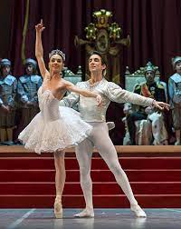

Mi primer acercamiento al ballet, fue a los 5 años, empecé a practicar en una academia, pero ya
mis padres no podían llevarme,por lo que se decidió dejarme de llevar. Al pasar los años yo veía
a
muchas niñas prcticar esta danza y yo decidí tomar la decisión desde muy pequeña a practicar por
mi
cuenta, con lan solo 8 años yo practicaba varios deportes en diferentes escuelas, pero el ballet
lo
practicaba por mi propia cuenta, viendo videos, practicanto mi flexibilidad y pidiendole
consejos a
los
maestros de danza de mis escuela primaria en la que asistía,jamás deje de practicarlo hasta que
cumpli 15
años, yo ya tenia conocimiento en cuanto a las técnicas y todo lo que era la parte teórica, la
práctica
se me hacia complicado porque no contamba con las herramientas adecuadas para practicarlo como
se
debía, por lo que me iba a la casa de una amiga mía que practicaba para que me prestara sus
materiales que
utilizaba cuando hacia ballet, así estuve hasta los 18años.

Ya a los 18 años, ya podía moverse sola en diferentes lugares,porque ya conocía y lo que más
me
caracteriza es que soy muy observativa. Cuando salía con mis padres me fijaba de los lugares
que
colindaban con otros, en fin. Había tomado la decisión de inscribirme en una academia y por
fin tener
ese acercamiento que tanto anhelaba, pues me contacté con una amiga y me fuí a inscribir en
la academia,
quedaba lejos de donde vivía,pero cabe recalcar que todo es tiempo que me estuve preparando
con los
vídeos, estuve ahorrando cada centavo para poder costearme la escuela.El día que asistí a mi
primera
clase me acompañó un amigo muy cercano a mí, mis padres no sabían de nada de esto, pues no
estaban de
acuerdo con que mis ahorros lo pusiera en una escuela de ballet.Al tomar mi clase me
encontraba nerviosa
pero super emocionada, me tomé muchas fotos, hasta recuerdo que las maestras me preguntaron
si antes
había bailado porque se notaba,ya que estaba en el nivel de principiantes.

Ahora ya me encuentro en un nivel avanzado en mi academia, en la que puedo desenvolverme de
manera
artistica,mi primera presentacion fué "La bella durmiente", no podía creer que por primera vez
bailaría las canciones de mi pelicula favorita de Disney.Entrar a un salón de danza me da
tranquilidad y me siento inmensamente feliz, es ahí
donde me doy cuenta muchas veces lo mucho que me apasiona lo que hago.Invito a todas las
personas que
leen esto, que nunca se den por vencidos,por más lejos que vean sus sueños, persiganlo hasta
alcanzarlo,
porque si de verdad le pones ganas a todo lo que se proponen, de verdad que sí se cumple.
Durante prácticas
Les comparto algunas de mis reproducciones de mis playlist
Videos en casa
Videos recomendados para empezar desde casa con el ballet